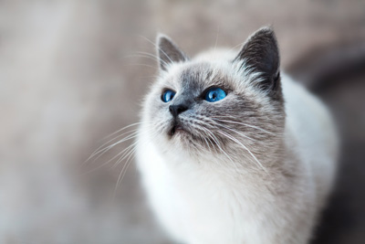
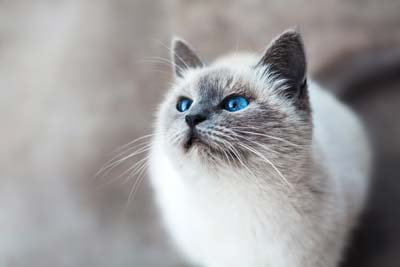
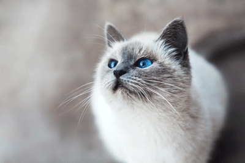
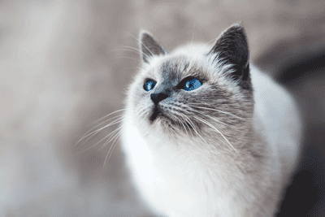
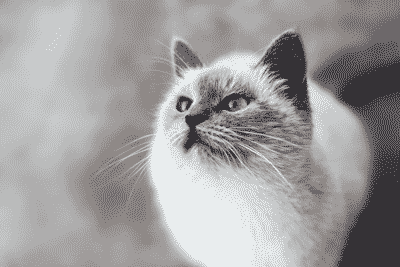

- 80% Quality JPG
- 25 KB
- Good Quality

- 40% Quality JPG
- 10 KB
- Noticeable Quality Drop

- 256 GIF
- 69 KB
- Good Quality

- 64 GIF
- 45 KB
- Heavy Pixelation in Eyes

- 8 GIF
- 20 KB
- Somewhat Sepia Toned
- PNG 24
- 122 KB
- Good Quality